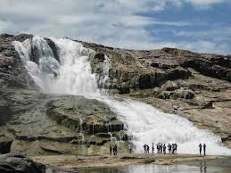
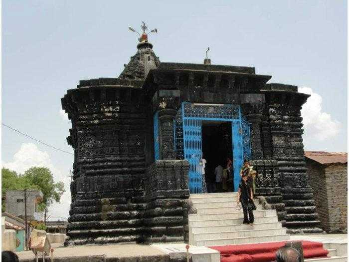
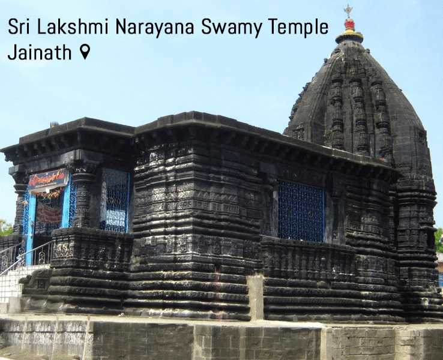

Kuntala Falls
Country: India | State: Telangana
Ideal Trip Duration: Full Day
Nearest City to Kuntala Falls: Hyderabad (260 Kms)
Best Time to Visit Kuntala Falls: September to December
Peak Season: September to December
At a distance of 12 km from Neredikonda, 43 km from Nirmal,
58 km from Adilabad & 260 km from Hyderabad, Kuntala Waterfalls is situated in the
middle of the Sahyadri mountain range near Neredikonda village in Adilabad District.
Kuntala Falls is the highest waterfall in the state of Telangana
with a height of 200 feet and also one of the popular weekend getaways from Hyderabad.
Formed by Kadam River, Kuntala falls cascades down through two steps from a rocky platform.
It is one of the famous one day outings and a good weekend getaway from Hyderabad city.
There is a motorable road till the entry point of waterfalls from where about 400 steps
have to be trekked down to reach the bottom of the falls. The falls is about 10-15
minutes walk (one way) from the entry point.
This is another popular attraction to visit as part of Hyderabad tour packages.
![loading](
aAAwDAQACEQMRAD8ADbiR55ZZlzjBygCjHhWHiUwYG4VANR7Jj1L5ZNKXd7q41M8aBd+yM4HntW7TmMjCqBg6t+mOnvqPnhN7O0veWVkhHPd+5enT12re241cOXcsUlQEuOg094/vhSYzFVIiMUcZGcjI1b9+D3VGZlZFCKqMQQ7bnx3xQkrbq1Q8Ulkj1Kxcjq/MJGfSjEnnZQWkIPkTVd4KrLJgzFw2w7OAPdVjRCkf3SlmC7Bjpz766JldaXnguKSZ4irOoHdnVnpW9xPbwNonuhp8NLZ+ANCSSzW8LPKkcYx2hES5PpkCtOGQgxSX90ByoyNPi79y+G/l0ppbbpuD52kSBJ21KhOzMukkZAGM5z8KV8U4fxG1eWe2R2g06s5Gw88UdbQ3XHONR/biFt7UBpsdlVC74H091G+1PEC9vHAhIEzA6V2GgdPjmmuEJVVsnveI3CW1oQk
75Gts93Wni8NvLVwr38bTYOoaSeg61ns8YbHiMt1IVBlm0MWXsoOrY8OgqMXsymW9KPJGdQjdcdpTsMb7k1pjjGgOyv5bsmTXpVSdLMSMjvNNI1dU5yzlxnBwhzn9aDTS6qba2WFWxuoyR67/ABqZJ5Q66Q7jv2x9KncIpMqIed3xDDDOsj//ACSRHGPWh1s74uVN9EgHk29RX9xogYza1PQKWbf35oe1kMatLE2MdVNb6YhunkREEem4vIXfHTpmg52xh3jg0k7YBpDdXTSyc9rKbOM5xkeW461CvErorqkHLjz2cJuaGWM1sLnpaoJY2iwipHqzqLIQaikvpFcrpdsbZAA+tU4380kpw0ignION/wButGtdTKer+9W2+VRthP8AWqzEjPtyy5P5x+b393SvAuQyjQSDto3GN84NaGYZfIflKMDGAR4VvCVbOjuO/Mx4U0TSsV3TsM2
NLdrdfd4VtlXU9hRjs5UfrQtun3naOg/8c4z4UdBEclyMoxI3Gw8BWFZ+CiEWqyxwhCrA/jzk+dNVnUlQzIO7xwKDR4RYrFG6ppILHoP5pXJxmLmTQxjG+FcDYjvz+1Ui/kEGaS6ukigdpF1FVUfKteN3if5CCwtHxHaAAMO+U9T61FwUqi3F2g/9uuQuDux6H50psHMvEUbYsX3JNWwmuktdO4aFXgUxUKonfRk/8dv0zVe4tOk15Ec9hpcBf/rQZIHwp3xWQ2XDLaAMo1JqxnvJ/bNVu2t7i845b2kEZYJCSzeBcFh8iKegc8Kksxwgz3Ri5gdvu2A694oGSWS9uYpplCKp+5ULpVPMAd/nSriN4kIZdIy0h5MeMjPTUfHGBimlvDL/AIq2JZsoGLb5ydRqVtNi8aARsY+1IGOcNIdznpvXttFDas7AOp32DE+tZLIVdRqCKCAHIBwT
41u1xDy3aRg0jAABDpJPvpRvqKOJJ5nkbUxR9Kh84I3/AFqWaOBlmTAxpIwTnbGMedCRX6/ao7eBFMudJP1rOJym1YAOik5ZsLk4xjGOlDbEWu7tjylli0q2wePOPga2uLiYxSC4mGtF0gBCoAPjue761EkvOAyHI1E/j860cBwQdBVjhU1AkCl+S80llUHNkR1w+oOTvsPpRUEskSssbS41HOCOufWoBqJLq7469pvhgegr1G23iY+eAf0qfCFLJqyxHU5zXsY5qkN0J7WBtiodSu5wrEZwOuB60QgbsaXIznIIpjJACJNlDnocL1oi2m+/0PrAYbgDtE1BBHIDvnUDnJXH96VINUV6JTjIzoO3ToSfKjoZDPiElzcxAQwMIlyCSyrk+80pVJY9TOjKO4mnkjyPZhpJDrA06kAAAwOnfSaO0F5OkQaVmHa3bOB4mmilWbgcIfhlzqzi
SJyTn8O2BS7gFm/+T5Z2YeAzVisOH3QsZbdLdwzLjc4wAQTnv8BRXs/wWOK6a6ubjSNRURiMnBG53zV9cK343azXvtGkCqRbwQoZG6hd9tvE9B61crO0tbC350dsiOFySRucDGSfSo+GGznmuZIElzrXmPIuAcAYx4ituLv/AKGcZ7JibUc+XSh6zjntDKE4pEAWUrEhPmxzn++VWXgV+x4VGpCswkdCT1I6gefWqtx4NcXq3UqB0RAuheuPD50fwy8mSyljSxW2BkOkq2SNv4pchg/i84V2iRMkbE5BwfPFI5nEbJmXEgBGp9h0BrficrzSiR5HYgY1Mf7mgbiXHZYRgDr+IkD4VIltqxcBYNAZWfLFsM6qBkedA8Uu+fPJlgyGTYAedecInS3ttLKwLts2QAdv4qawt4L/AIjDHnMkmSF3A2+dY++FsUgNzoCadJOSD0rDy5EL46j
A1b0VxieaLiE8ekFw5DOOm/rSuSTcdxU6U3wBn981PLvE72p3MUKMrkMzDOFFRLpcsUOlc7ApUWmQuxOnWDjxz7q3NwqEiMgrnY5/ahoNa9L1RShcuDqOrBwBUkS6Sx0knJ2zjbyrIbSRJJmc5hjyw1df+qmiiKxiWMDDAn0I8fDpVPqf6smMcUKkZdmyoXHp8qis7mVXkmmYssR2GN8npUXM1zZcYX8hP5hW2kDGcDOOg608gjbG7mljmeYksQQpx1p97C2i3HEJ5H0hYY1yxGQpJ2Pn3/CkKMyBFQZXl5x51f8A2GiC2ExYKrTSKvM0jf8AozT/ABzu2WSCIwWavI3LLAsPFUG46+W/qTUvCYyLcXTIBzyOUjdoIg7/AK7+JoN5X4gbiYf7GBEmD1XOf499NAoM0MCDsyDs4/Ko/eqVjXGmLpp7wKrHtZOTbNZojSSEayqKScVZ5+w
o7l6t6Ab1S72eQQX3FZmEetSkQ8Sf2FLgylXt1CtnyyF1MWDEkZXbbvr3hPEEbh80e7gNr1ZxkdKHa3ilgSSZB2m3/wC6UX8MKyqBEDpOQcbe7+91RtbZlxBwuhg0LKCoZlYYH98qXyyOrPghcjIy22//AHRDKZLYchDjPVsb4/egpi7zCLTuSSxI+maEvS63Taze2gjiAEZ04dmyCB3dc9abcAlR+Jh0IwASoz9PjVeZ2soNEWFkkwxY7EjwplwQyxJf3gXU8MP3ZwPxEjG3fRx9O14+ztxGWWQnUi9AdvDPrSaJAQ00mrUCPw9+9H3jyyIZbhg8zsMnG/8A3Q+wAUglUBJye+kz/Uqik7ayZJ7W2g9/lmgWiWQ9rKlezjUe6i5Zy4AIxpI3I2qKOflggNnJycitDQZflWINuqYJwWwSBvkn61C8bgORqVZNR5fXfGAT/e+o41aEAM+
pm89hRPPSDP3Ssc7k5yT5U21QQVlALglhsDnNeYfKlycbnapbpdwuyuoGFPQg99RhyIzlvLYbUd8LRVqTzGPj1x4dcV0bg8TW/A7WMxjW6mTHgW2B+dc84RGZm052Jx+n611PgWi4ldGORAAip54wKthwB3DI2SztbU9p7hmlcn8o7vpTy0jXmPJjBJ7PkO7HwoQoIrmWQdIYdNMLXLQoxwMrkVsqyDiDHkyjPVcb+e1Uf20u1jtrW3QgJhu/w/nNW/jRYhIYyA8n6kD96557U3UTcVms41DrDGI9ZPVu+hbrBiKW5aNCqo+gYY9CDmhZIHVHk1M7scFetbyvPDmNVWRcD8LEYx31LIHFmZXV11EbL2tqjOmje5HLso2V9bBMk46EbUkuD97zVXDLuoz0HX9abz3ebcOiGTbA7J05x1pTyTdTyGTUoUkbH++FDzpP7sG5DrG2c9Rt3+FW+wblcFvnWQ6J0TsKcjV03qvLadnVleXtsyjenlxdL/hbO3SJY85d9I6gbAfWnwstG9ByyCOBSFY6t/P+7UKxeSMMXBUn02qe9OmLLsCmOyVGM0PJKWi7OygYBby60lmyNJuWziIgjv2Hf6UFeI7zZVmG2MZoi3I5iyH8eOnj1r2MIwJdEJz3n+aBm5w5Qg7GpCoN5G2D2xkr4d1CR6IyDIwwAQT3jIqUTlZomIyACBg0T7eyxBrx879y47wKiZAQw0EFunlUgDM77E46nyrVpR00NqHQGmn4FM/ZyBmuYQoyNW/wro3soyl2kUZBlaRm/vdVP4JbtZ8PErYEk33ce3j1NdE4XaLY8ISNVAkaLB28d/pXRjNQEt8+OFTMoYvOQM+Z2FOYVENoF3wq6R7tqRO5ln4fbKdmYyH3dKezuFKp4dpvQUmX4xRdTL9ummc5WFT7goya5K6y3csl2NRklcsfea6Dx6do/Z6+mBxJOnLX1dsfTNU+SReEWccC6TcN2pCfyA9BRs3wAFzw+aD/AFFwTrAAKKu59e6oW4mgxBKpmxuBq1YpNe3TXE7sbl5Cd/xd1C2qMJi4JJzsCcn3Ulkngn0lyJIkSOTSfDNBxK8Vy6yYBfceYqFBIskaxsyePTp414eYZRJKpHayCFPTbFSs3NNoxtk1jlFTjP0yKO4pYzWL24uI2WJ4zpbzycj5ilEahX+7lYl+pB6/tTz2nvpLu9jhYjl28Srg9NRAJ+go/FjqWgTzfeyBAwZBtjPTyoWdvv2QuzKDpxnbNb2yASOY5CV3G++K0wQ41HPaztsDTXHTabAYnQ5AymNu+sjgLKe0uxxua3RW1owGQuV7Q2FYIzIMtJjGw69KnawWJdV1grlcdfDaiRIOW7x47OAu/vrZUAdpGCnJwVO2B41qybMxOCTnb++lNDvbdg8TRhiCRq2HTy+VNPZ7hE3EOILzQTGvUgY9CfKl9mh1xMwB6jI2roPs7HDbWLXAbVgYGVA8e+qYY9KFudF1x6CztgQkDYq6SZW2Ysd2ACn1qlexY+08dnuZCRpcn1P9NXTiriNo0AyM5wKtAQcLQ3HtDIxPZgXYeG2PrmmnEJNMN1L36Qq0B7MQNGLyVjlpHxnO9F36mRbeFeskhZj5Df8Aakv/AEKt+0a6bS1gY9gymRye5UXr8TXN+OXX2lnmO2pjkfSrv7Z3PNIhtn1KE0sw6dST/fKud3XLVXL5IxkgfShkwaztmZC5G7GjLaz5oKsjHB6qu4H1pZr7JYsyBt91J+e/0pxwO7dHUGWNl2V9WxA/WpZ3gz0U9o6ypbpCqrpzuSSR4523qG4UQI8aqWVRhjnHwprxWfkJrCgMUzqU7EZ2ApZCHvdMeN5HI38zU8ZabK6R8B4fNf3PKhhbl22qRz00INzkmg2uWuE5mk5klfIG56A10OLhsXBvZXiMcj6biS3eJpAeuRsR571z3kvDDHOWXtP0Y7ttvtXRcfr4Rvanlxk6ShY7Z8KwK0qdpXUZ7h8+lapIDGqYwRtnxraNXefS/durFvp3Ume7iFbswMictSSp1HG3lU7CJOw1qZGXYnVio4m5ckhOhQFOGfOoY93jvUy6ioKsqgj87bnzrmt/CopVU80aCB0BJ3NQsQ2lF7uvmannJUEN18M5JNaW6F5FJBGSffVoqacNt1nKROmSTjbbHjVm4gPsljHbxjGhNwPE7D9aA4Fa/wCvVXyUQZBp7xdVNpNIU1MiMy+oG1dOM4UL/wCm8Baa7fc6JSSfHwq2XMJmv5Dn/bUZ9aWewNmOHezwnn7DTnWCdzjotOUV4lnmbBLKcnOdzRjPeDLosnZuruxHu2qLjdwLazkcMQyJhceJou3iMNpFEfxbfWq77WTFtMSDcsfkKE92yiX9wzGU76RstVS9lOe0DirFxKVEj5SMrOQSxB2PlSEZ7JG/f06++kyZpBzuXrhi1HVpJGMgbbfMUw4WqqZDOulkXsrnYZH80KhkUBNZwT4Zyf7ii7KC4nYGJnBQYLYHTYb5rnu/6M9FcTjWVEVDkytn/wDPgPhTv2atYoYbKSVd9eCR13qTh3ClPDVllOuQHGk4GP5NHWMbRRaihVRuPWuj4cdRsu1F7VSFuBXrIzHlqinbGSzrvXPZJH+zRDUSpznbeuk+2rfYfZKK2uFH2i4lUvjqQO1+1c5CZKRguNOdWV6Uc70BfCreSQKFXc75K7AUZbWKszylDgHSuehNbWtwF0xvuH/KOgA7qLlvLaONuXC68zZV7s46+VJndTTEd72HMYGgKfhSx9eshSzBTjJOaLvJCzO2c42xnPf8+6sDNHtLclWO+AtSkIcW3AeIXYJjjhjCrsr3CLn3Zppw/giK/Kur62huM7oWDf8AjmlUNz92SQpIyNtwK3juFX8i6+oK+GfHFH76H7OjWnDo7NN7u3kJ/wCLjGPAV5PAL
gGIEEPscb7Hr8qpfC7yRJN7kIc/jPTHpVptbzhkQMkt7JPNKuF5cWjAA86vh8so72Nu7+NbyKEOqWtrjVgbbbAf3wo4XguZYLe3w0ZIeRwx3zvj1qicfZrfVdW8sLpIx3jkfIA65B27/fQMHGLyyjneNAhlTlliNgPLuGcUuXydDbr0dxFcueT2lUkls7Gud+2nE0LXEcLZcsIRpOcdSx+XzpZD7V3aRm3SXkRMoDLH348PD5UJLdEIoZdTfiKnrnvND/TTfYolUxwFnI3GwzvUKKxAyu2OyT60a0RnuNoiPVTgVtKsNs0ccmWYtgoKFyNJtjQ6LJVIJkkbTnrgZ3/Si1lSIM0K6VOF67DHlUN3PAJmkbSigZC9Nh4CobWdb+RYoBgA5f8AvnSTG5UVo9nRLNazkqcasqfE9OlWHhdh9ouAZ2xFGASD3+VCezdo2Aqxd+S2MACnt61tw+xklc4VVJbyrrxmpoFE9vr4XfE+UMYQYGO7aq8IVjtgzsWfR2u4elTXU8V7fu2SqsclvLwqGRudll/21/5eFT4AWJbl7hclWXA7RojiUfJit44zpyhJC74ojh1uJyJBG4PcT2c+6prlxG0kkQLtGQB5Dv8Aoanl00nFck5oPaUo2dtexPxoZlVWKuACOuTT/iVuz3D3DnJCxjJHXCAE0tKNt+AEjfKg/pSF+otCRbZ6nUeterM4iDA4LHfFZWVmgkQAQLKHfUcE7+NFW88kiBXYnsnfvrKyp23Rb6ku7eNbZ5d2IH4WOV+FJZrmQwxrqIU/lycfCvKyqewuQa3JZtz+EHHyou2lkky7Ocg4r2spmef5G4ikKqwwHAGa8NzLNFJM5GvK7gVlZQsUxqDiAxI5yTqOcHoNzt6VZPZezh+xGQLhhuMeO9eVlUxF03hMSx2UCoMBuvwpN7bLjh8qhmwMjrWVlV2zlcDtc8Tt7JyRC8ultOx6fxVyayt7BQkEakFcnUM1lZUKbEJPkNzATnmiP0GM1kYXUWCLk9rp3jpWVlAyK7zJxMRliFRQQB44qR7aMMeznPkK9rKAP//Z)
According to the popular and prevalent local belief Kuntala Waterfall got its name after Shakuntala, the beloved wife of King Dushyanth; the pair fell in love with each other and were mesmerized by the scenic beauty of the surroundings. The locals also believe that Shakuntala used to take bath in the waterfall.
Monsoons and post-monsoons are the best seasons to visit Kuntala Falls. It is dangerous to get into water at the bottom when the water flow is high due to sharp rocks and twists. The flow of these falls depends on the release of water from the Kadam Reservoir. The uncertainty of the water release, especially in the rainy season makes Kuntala Waterfalls a slightly dangerous place. You don't find much water after January, so avoid visiting between Jan & July.
Public transport is available till Neredikonda village from where private vehicles can be hired. The waterfall is situated in a serene location with wonderful views of the nature surrounding thick forest. The road between Neredikonda and Kuntala is filled with thick vegetation and the drive offers wonderful experience. Kuntala falls is a great location to spend a couple of hours.

Jainath Temple
Jainath Temple, Adilabad Overview
Built-in Jain style of architecture, Jainath Temple is located 21 km from Adilabad in Jainath Village. The temple is renowned for its Prakrit stone inscribed with 20 slokas that suggest that the temple was built under Pallava chief.
The temple is visited by a large number of devotees especially between Karthika Sudda Ashtami and Bahula Saptami. Lord Lakshmi Narayana Swami Temple located in the vicinity of this temple is also a major shrine.
Architecture wise it is a small temple which is located on a platform which is two feet high. The Lord's idol in the sanctum sanctorum is six-feet tall and is made entirely of black stone.
The temple and the surroundings are getting a face lift with tourism development activities undertaken by the state government to connect it with other places of interest in Adilabad district and North Telangana.

For the spiritually inclined and those with a penchant for history, the Jainath Temple of Adilabad not only offers solace but also provides a unique window into the spiritual and architectural legacy of Telangana.
Its continuous allure lies in the seamless blend of divinity and artisanship, beckoning travelers from across the world.
A Glimpse into the Past
The roots of the Jainath Temple trace back to the period of the Pallava dynasty, indicating that it has been a sacred site for many centuries. Over time,
the temple has experienced several renovations and received patronage from various rulers, which has helped in preserving its grandeur and religious importance.
As a historic site, the Jainath Temple stands as a silent witness to the myriad of cultural transformations and political shifts that have occurred in the region.